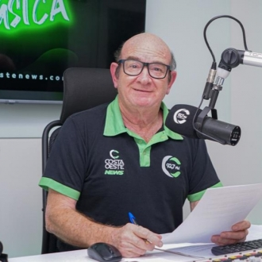

Ao vivo
Ao vivo
Tocando agora em 92,7 FM
Show da Tarde
com Jeferson "Black"
Ao vivo em Medianeira PR
Há mais de 45 anos levando informação, música e companhia para a sua casa. Somos a Rádio da Família, agora em 92,7 FM.
Ao vivo
Tocando agora em 92,7 FM
com Jeferson "Black"
Programação
Agora 15:20
Valdecir "Xi"
Valdecir "Xi"
João Hermes
Jeferson "Black"
Neilor de C.
Valdir H. Brod
Horários ilustrativos, aguardando a grade real da rádio.
Quem Somos
A Rádio Independência nasceu em 4 de dezembro de 1978, em Medianeira, e em pouco tempo levou sua programação para toda a Região Oeste do Paraná. Informação, jornalismo responsável e prestação de serviço, com uma equipe que virou família de quem ouve.
Conheça a história completa
Começa em 1020 AM, em Medianeira.
Novo proprietário, Moacir José Hanzen, adota o slogan.
A Independência passa a operar em 92,7 FM.
A rádio mais ouvida do Oeste do Paraná.
Equipe

Locutor e Comercial
Amanhecer na Costa Oeste
Produtor e Locutor
Show da Tarde
Jornalista
Costa Oeste News
Locutor
Serranópolis em Destaque
Locutor
Encontro de BandasPeça uma música
Mande seu pedido com um recado. A gente toca pra você e pra quem você quiser.
Prefere o WhatsApp?
(45) 9 9935-8890Contato
Participe da programação, anuncie sua empresa ou tire suas dúvidas.
Av. Pedro Soccol, 452
São Cristóvão, Medianeira PR